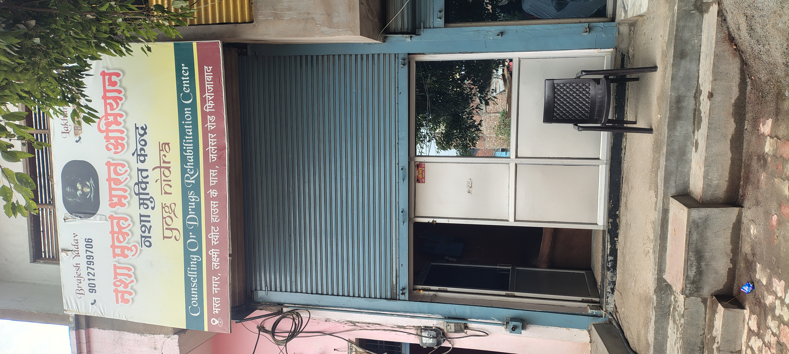
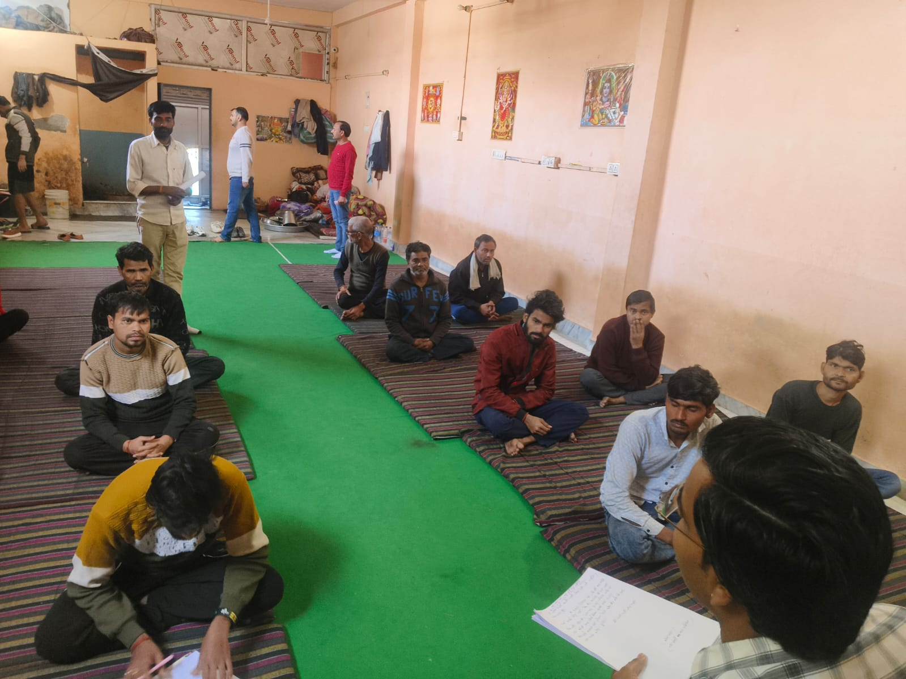
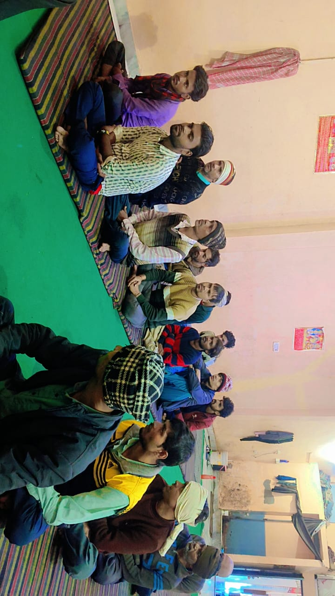
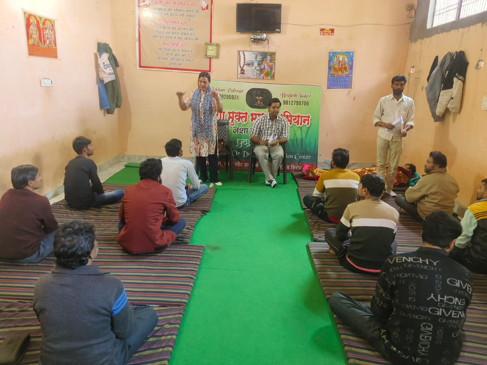
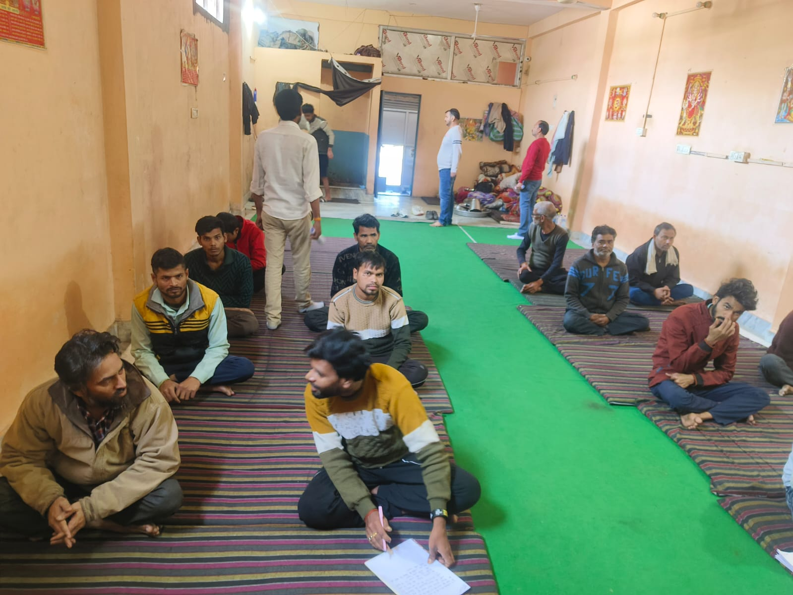
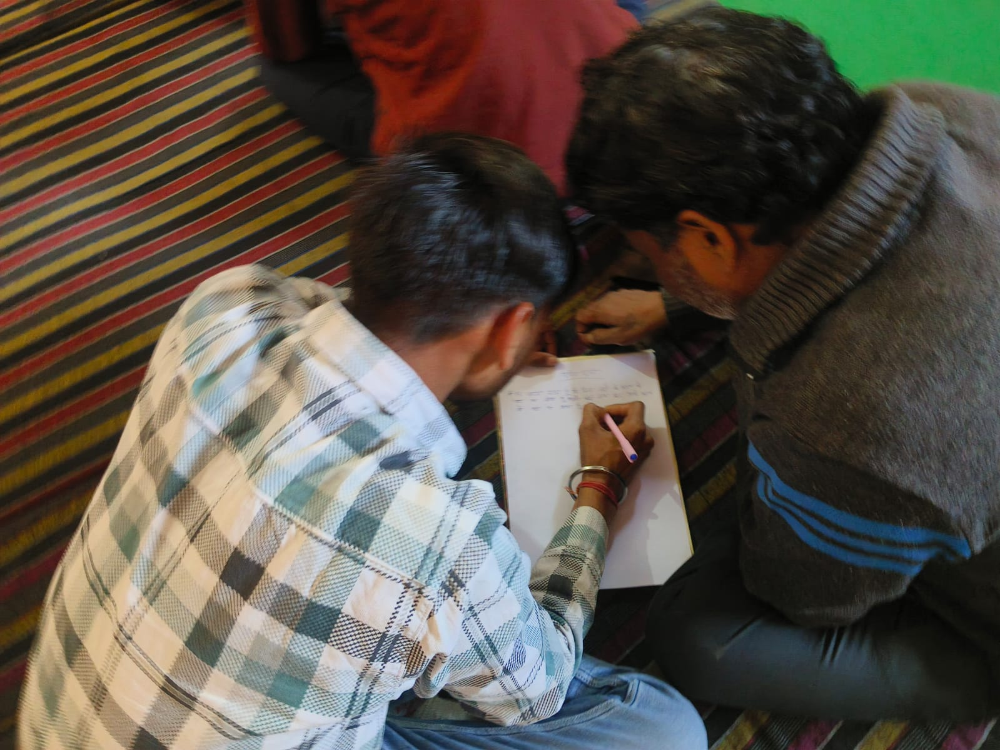
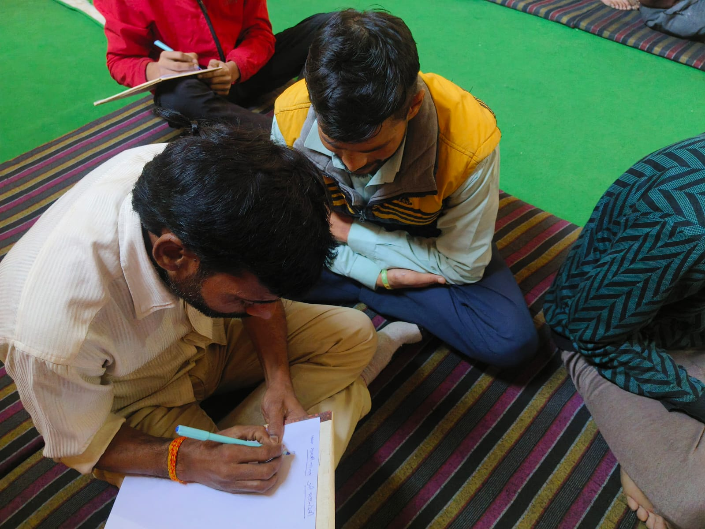
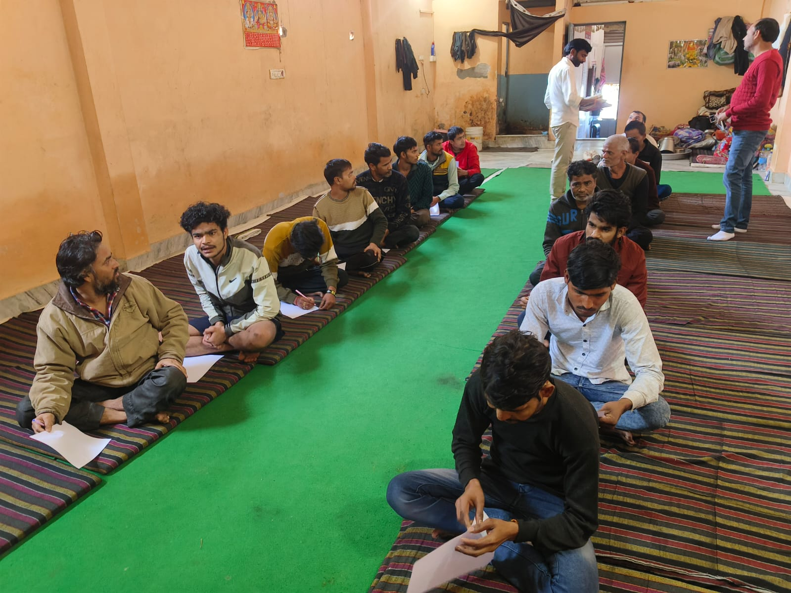

Welcome to Yog Nidra Nasha Mukti Kendra
हमारा संदेश: "नशा मुक्ति केवल एक शारीरिक प्रक्रिया नहीं, बल्कि एक मानसिक और आत्मिक परिवर्तन है। हम आपके साथ हैं, हर कदम पर, ताकि आप अपने जीवन को एक नई दिशा में मोड़ सकें।"
हमारे पास आने से पहले आप संकोच न करें। आपका नया जीवन, हमारा उद्देश्य है।
हमारे केंद्र में भर्ती हेतु पीड़ित व्यक्ति को घर से लाने की विशेष सुविधा उपलब्ध है।
About Us
नशा मुक्ति केंद्र: नया जीवन पाने की ओर पहला कदम
आज के समय में नशे की लत एक गंभीर समस्या बन चुकी है, जो ना केवल व्यक्ति की शारीरिक और मानसिक सेहत को प्रभावित करती है, बल्कि उसके परिवार और समाज पर भी नकारात्मक असर डालती है। ऐसे में नशा मुक्ति केंद्र एक सशक्त समाधान बनकर उभरते हैं, जो न केवल नशे के आदी व्यक्तियों को मुक्ति दिलाने का कार्य करते हैं, बल्कि उन्हें एक नई राह दिखाते हैं, जिससे वे अपने जीवन को एक नए दिशा में ले जा सकें।
Our Services
- व्यक्तिगत काउंसलिंग:यहाँ पर हर व्यक्ति को मानसिक शांति और समर्थन मिलता है, जिससे वह अपने नशे की आदतों को छोड़ने में सक्षम हो सके।
- समूह चिकित्सा:नशे के आदी व्यक्तियों के लिए समूहों में सेशंस आयोजित किए जाते हैं, जहां वे अपनी समस्याओं को साझा कर सकते हैं और एक-दूसरे से प्रेरणा प्राप्त कर सकते हैं।
- पुनर्वास कार्यक्रम: एक ऐसा किट और कार्यक्रम जिसमें मरीज को नियमित रूप से सहायता और समर्थन दिया जाता है, ताकि वह फिर से नशे की ओर न जाए।
- डिटॉक्सिफिकेशन: एक सुरक्षित और प्रभावी तरीका जिससे शरीर को नशे के पदार्थों से मुक्त किया जाता है।
- मानसिक रोग विशेषज्ञनशे की लत के इलाज के लिए निदान और चिकित्सा प्रदान करना, निकासी लक्षणों या मानसिक स्वास्थ्य स्थितियों के लिए दवाइयाँ निर्धारित करना, और निरंतर चिकित्सा देखभाल प्रदान करना।
- क्लिनिकल साइकोलॉजिस्ट मानसिक मूल्यांकन करना, चिकित्सा (जैसे संज्ञानात्मक-व्यवहार चिकित्सा, पारिवारिक चिकित्सा) प्रदान करना, और मरीजों को उपचार के दौरान मानसिक और भावनात्मक समस्याओं से निपटने में सहायता करना।
- काउंसलर एक-पर-एक या समूह काउंसलिंग सत्रों के माध्यम से मरीजों को मदद करना ताकि वे इच्छा शक्ति को नियंत्रित कर सकें, नशे के कारकों को पर काबू पा सकें और नशे के बाद की जीवनशैली के लिए रणनीतियाँ विकसित कर सकें।
- योग और ध्यान प्रशिक्षक नशा मुक्ति उपचार के दौरान शारीरिक और मानसिक स्वास्थ्य को बढ़ावा देने के लिए योग, ध्यान और माइंडफुलनेस का उपयोग करना।
- कार्यक्रम निदेशक/प्रबंधककेंद्र की गतिविधियों की निगरानी करना, कर्मचारियों का प्रबंधन करना, उपचार कार्यक्रमों के सही ढंग से क्रियान्वयन की देखरेख करना, और परिवारों के साथ समन्वय करना।
- आहार विशेषज्ञ/पोषण विशेषज्ञ यह सुनिश्चित करना कि मरीजों को उपचार के दौरान सही और संतुलित आहार मिले, जो शरीर को नशे के प्रभावों से उबरने में मदद करे।
Contact Us